Al comprar tus paquetes vacacionales puedes conseguir un valor más bajo en tu viaje, ya que al sumar un alojamiento o un auto, obtienes un descuento significativo. ¡Comprar paquetes de viaje siempre te va a resultar más barato! Puedes armar tus paquetes turísticos a medida, ahorrar en el valor total y gastar ese dinero en tu viaje. ¡Aprovecha viajes baratos a un sinfín de destinos!
Viajes Chile tiene propio parque móvil desde 4×4 hasta el vehículo de expedición. trabajamos con un grupo de guías con amplia experiencia por muchos años. Contamos con alojamientos propios. Elaboramos nuestras publicaciones con informaciones útiles para nuestros clientes y somos autores de distintos guías y mapas sobre flora y fauna. Lo mas novedoso de nuestros Tour Operador en Chile es la oferta de viajes con bicicletas eléctricas.

Somos una opción distinta para los viajeros, ya que antes de ser asesores y hacedores de viajes fuimos apasionados viajeros como tú!, lo cual nos permite ofrecer rutas y servicios de viaje que todo viajero puede necesitar al realizar cualquier tipo de viaje, y a esto nos referimos desde origen hasta destino, ya sea transportación terrestre, aéreo o cualquier otro medio de transporte que requiera.

Sorprenderte con las increíbles formas de las montañas, los glaciares de un azul profundo, los sobrecogedores y hermosos bosques del Parque Nacional Torres del Paine en esta versión corta del mundialmente famoso W Trek.

La unidad Los Flamencos está ubicada en la Región de Antofagasta, comuna de San Pedro de Atacama, provincia del Loa. Fue creada el día 17 de octubre de 1990, por Decreto Supremo nº 50 del Ministerio de Agricultura.

¡Qué lugar más especial! Rodeados de volcanes, montañas y cordilleras, esta laguna nos colma una paz indescriptible apenas comenzamos nuestro recorrido hacia sus aguas ricas en plancton y crustáceos.

Ríos y torreones marcan la identidad de la impresionante Valdivia. ¡Conoce la ciudad austral más antigua del mundo! Navega por su principal río, el Calle Calle. Disfruta de los mejores productos del mar en el Mercado Fluvial